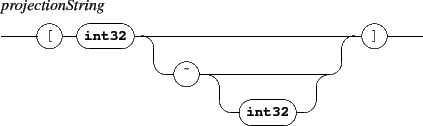

Next: 11. Signals and graphic
Up: 10.1 Synchronization modes
Previous: 10.1.2 Synchronizing an object
Contents
Index

The synchronization position mode has the following effects on the slave y position:
- syncOver: the center of the slave is aligned to the master center.
- syncTop: the bottom of the slave is aligned to the top of the master.
- syncBottom: the top of the slave is aligned to the bottom of the master.
The default position mode is syncOver. The y attribute of the slave remains available to displacement (dy).
NOTE
The y position of a synchronized object remains a free attribute. To control this position, you should send dy messages.
EXAMPLE
Synchronizing two objects, aligning the slave duration to the corresponding master space, the slave being below the master map:
|
/ITL/scene/sync mySlave myMaster h syncBottom
|
Next: 11. Signals and graphic
Up: 10.1 Synchronization modes
Previous: 10.1.2 Synchronizing an object
Contents
Index
Grame - INScore project